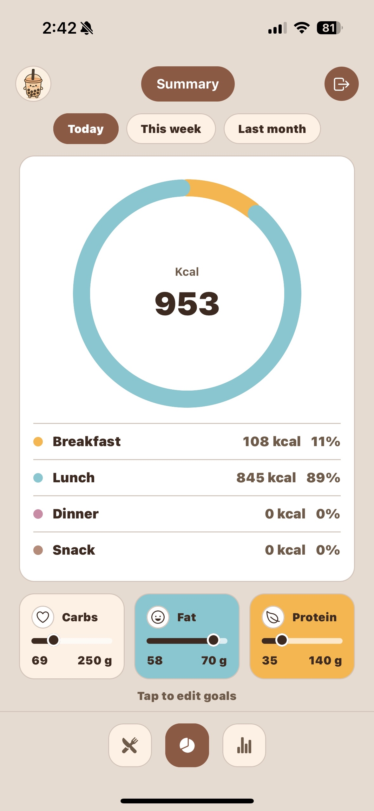
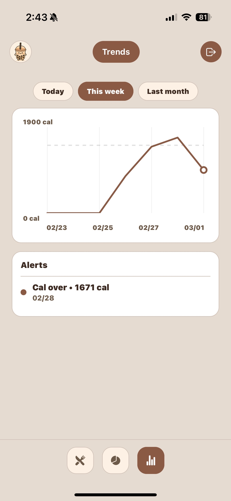
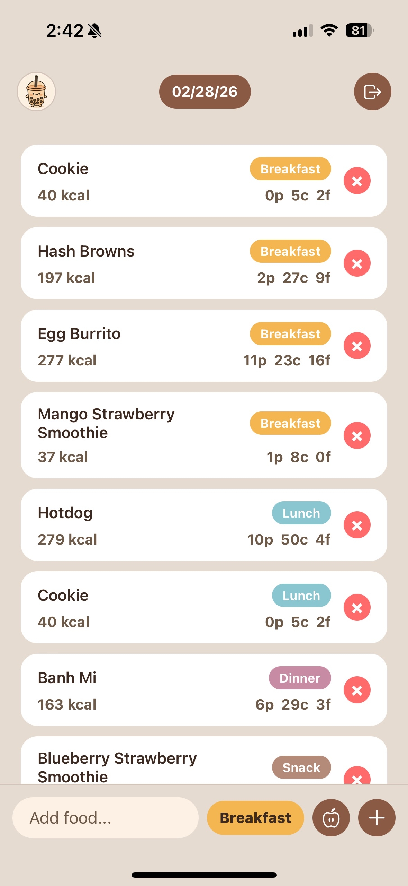

A minimalist iOS meal logging app that favors speed over bloat.
A minimalist iOS meal logging app that favors speed over bloat.
Food Tracker is a responsive iOS meal-logging app built with React Native (Expo) and Supabase. It focuses on frictionless logging—fast entry, clean visuals, and building sustainable habits without calorie overwhelm.
Existing trackers are slow, cluttered, or calorie-obsessed. I needed a tool that makes logging take seconds, not minutes—so I’d actually use it every day.
A one-line input with meal-type tags, a date/time picker, and cloud sync—wrapped in a gentle, pastel UI that makes the habit feel easy.
Built with React Native (Expo) for rapid iteration and OTA updates. Supabase handles auth and Postgres storage with row-level security. UI state is kept lean to keep input latency near zero.
Two upgrades are already in progress to make Food Tracker more fun and more useful:
1. Themes you can swap anytime. Right now the app uses a Boba theme — soft browns and pastels. Soon you’ll be able to switch between presets like Sky (light + airy), Cat (playful), or even ??? if I add more later.
2. AI Meal Prep. You’ll be able to say something like:
“I have chicken, spinach, and rice — plan meals from 10/7 to 10/14.”
It will:
Both features will be added without changing the simplicity of the core logging flow.